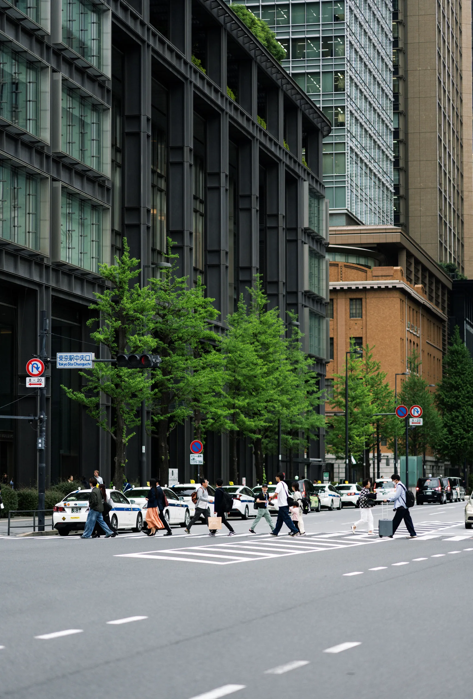
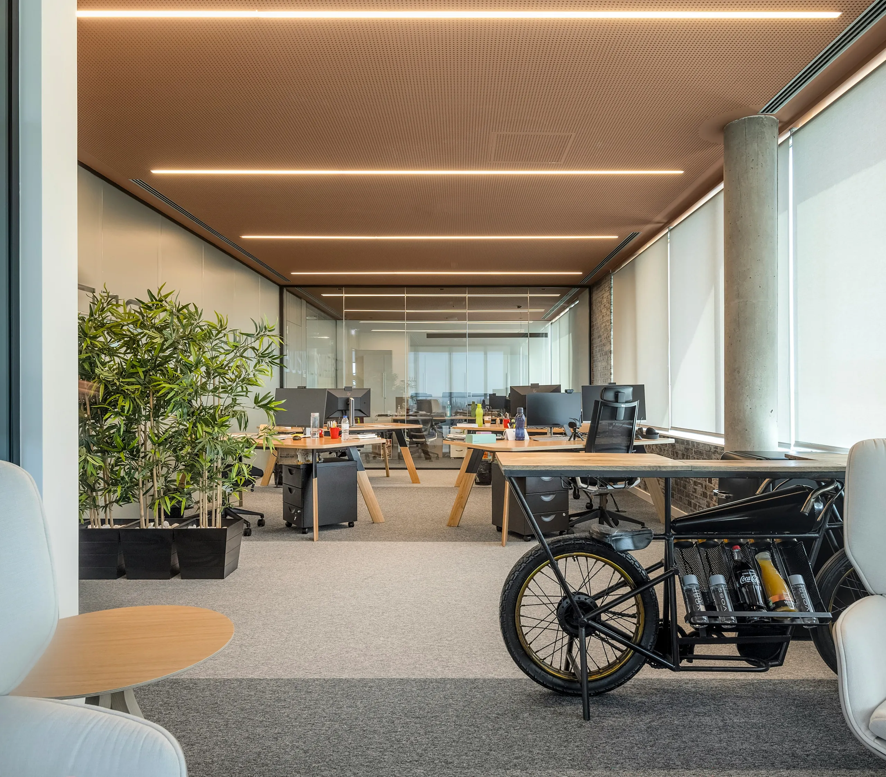

About
RYについて
会社のこと、強み、多言語の体制まで。
RYの全体像を、ここから。
-

会社概要 設立・所在地・代表者・事業内容など、RY の基本情報。 詳しく -

RYの強み・数字で見るRY RY の強みと、管理物件数・入居率などの数字で見る実績。 詳しく - 多言語対応・現地ネットワーク 日・韓・中ネイティブ体制と、現地に根ざしたネットワーク。 詳しく
L1 概览页：リード + 3 子页入口卡（→ 各 L2）。文案/数字＝content 占位（正本は各 L2）。図＝暖の点缀（非 load-bearing·§5.5.1#2）·解説モードで差替可。⚠ 入口 href＝予定ルート（jump 阶段で接続·連接前は仮）。